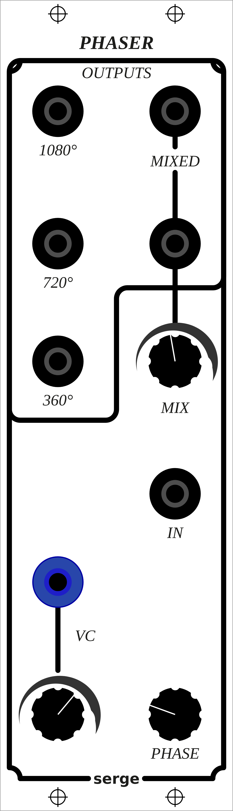
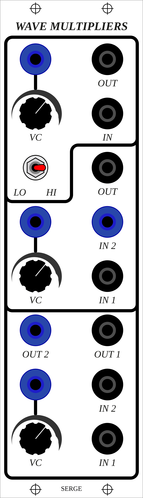

Serge modules: build pages
For each module: the panels in this repo, how it works, and where to get the PCB, schematic and parts list.
Modules
| Module | Function | Panels | |
|---|---|---|---|
 | VC Phaser PHA, Phaser, CGS90 Phaser and Audio Mixers | Effects | 5 |
 | Wave Multipliers VCM, CGS113 | Timbre / waveshaping | 1 |
 | Dual Universal Slope Generator DUSG, DSG, CGS114 | Modulation / envelopes / oscillators | 2 |
Where to get parts
- Elby Designs: Sells the PCBs for Ken Stone's CGS designs.
- Ken Stone (CGS): Schematics, parts lists, PCB overlays and construction notes for the CGS designs.
- Prism Circuits: PCBs for some 1973 paperface modules in a 4U paperface-friendly format.
- Low-Gain: 4U and Eurorack modules, DIY panels and PCBs. Some Low-Gain boards will not match other panel layouts, or need extra work to fit them.